Hazel 游戏引擎笔记 034：摄像机及其工作原理
本节来源：The Cherno 游戏引擎系列第 34 讲“摄像机及其工作原理”，时长约 38 分 54 秒。
原课程与 Hazel 代码作者：The Cherno。本讲代码基线为dc9e382，下一讲正交相机实现提交为c1d915e。
本文由视频字幕重构、翻译并整理，不是官方教材；术语和代码以原视频及同期 Hazel 仓库为准。
本节目标
第 33 讲已经建立 Renderer、RenderCommand 与 RendererAPI，但 Renderer::BeginScene() 和 EndScene() 仍是空函数。摄像机正是 BeginScene 的第一项正式数据。
本讲刻意不写 C++ 代码，而是先解决设计问题：
- 摄像机究竟是什么；
- 它在渲染和游戏逻辑之间处于什么位置；
- 摄像机需要哪些数据；
- View 矩阵与 Projection 矩阵分别表示什么；
- 为什么移动摄像机会让整个场景反向移动；
- Perspective 与 Orthographic 投影有何区别；
- MVP 矩阵怎样生成屏幕位置；
- 相机数据应该在何时、上传到哪个 Shader；
- BeginScene 应该保存相机引用，还是复制矩阵数据；
- 为什么下一讲先实现正交相机。
mindmap
root((Camera))
Data
Position
Rotation
Field of view
Aspect ratio
Near / Far
Matrices
View
Projection
ViewProjection
API
BeginScene
Uniform upload
Per-object model
📷 上一讲最后仍只有一个没有相机参数的 BeginScene
回到原视频 (00:00:03)
1. 摄像机同时属于游戏与渲染
(参考时间: 00:00:22)
摄像机不是单纯的渲染对象。它与两类系统都有关：
- 游戏逻辑：角色移动、载具驾驶、鼠标输入和相机碰撞会改变摄像机；
- 渲染系统：每帧需要把摄像机变换和投影提交给 GPU。
因此相机架构必须同时考虑：
- 逻辑更新是否高效；
- 相机状态如何传给渲染器；
- 多线程命令队列是否存在数据竞争；
- 不同摄像机类型如何共享公共能力；
- 未来编辑器相机、场景相机和阴影相机如何区分。
这正是讲师先画图、再编码的原因。相机 API 一旦被场景与渲染器广泛使用，后续修改成本很高。
graph TD
A[Player Input / Gameplay] --> B[Camera State]
B --> C[Renderer BeginScene]
C --> D[Shader Uniforms]
D --> E[Projected Scene]
E --> F[Screen]
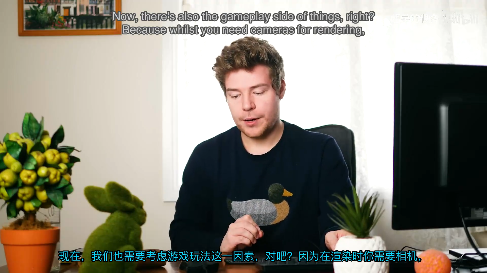
📷 摄像机同时受游戏逻辑驱动，又决定最终画面
回到原视频 (00:01:45)
2. OpenGL 没有真正的 Camera 对象
(参考时间: 00:04:24)
OpenGL API 中不存在 CreateCamera()，摄像机是引擎建立的抽象。它的目标是回答两个问题：
- 我们从哪里、朝哪个方向观察场景？
- 我们看到的世界范围有多宽、多高、多远？
第一类由相机变换得到 View 矩阵；第二类由镜头参数得到 Projection 矩阵。
摄像机本质上是“把世界转成观察空间”的一组矩阵，而不是某种 GPU 原生实体。
flowchart LR
A[World-space Objects] --> B[View Matrix]
B --> C[View / Eye Space]
C --> D[Projection Matrix]
D --> E[Clip Space]
E --> F[NDC / Screen]
📷 OpenGL 没有 Camera，引擎用矩阵模拟观察者
回到原视频 (00:04:24)
3. Field of View 与 Aspect Ratio
(参考时间: 00:05:47)
现实相机可以更换不同焦距的镜头。游戏引擎通常用 Field of View 表示视野宽窄：
- 大 FOV：看到更多场景，边缘透视变形更明显；
- 小 FOV：视野更窄，长焦压缩感更强。
常见 3D 游戏 FOV 约在 45° 到 65°。继续增大时，画面边缘容易出现类似鱼眼镜头的畸变。
Aspect Ratio 是视口宽高比：
aspect = viewportWidth / viewportHeight
如果没有正确的宽高比，圆形会被拉成椭圆，画面几何也会变形。
flowchart TD
A[Camera Framing] --> B[Field of View]
A --> C[Aspect Ratio]
B --> D[Horizontal / Vertical Scope]
C --> E[Viewport Shape]
D --> F[Projection Matrix]
E --> F
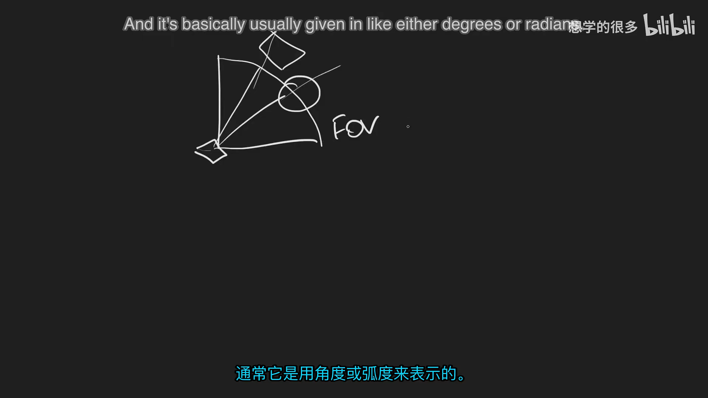
📷 宽 FOV 能看到更多对象，窄 FOV 会裁掉两侧内容
回到原视频 (00:07:05)
4. Near 与 Far Clipping Planes
(参考时间: 00:34:55)
投影矩阵还需要 Near 和 Far 裁剪面：
- 比 Near 更近的物体被裁掉；
- 比 Far 更远的物体被裁掉；
- 两者围出透视图中的视锥体。
Near 不能设为 0，否则深度精度和矩阵计算都会出现问题。Far 也不能无限大，否则深度缓冲精度会快速下降。
正交相机同样有 Near/Far，只是视锥体形状从“截头金字塔”变为长方体。
graph TD
A[Camera Position] --> B[Near Plane]
B --> C[Visible Frustum]
C --> D[Far Plane]
E[Closer than Near] --> F[Clipped]
G[Farther than Far] --> F
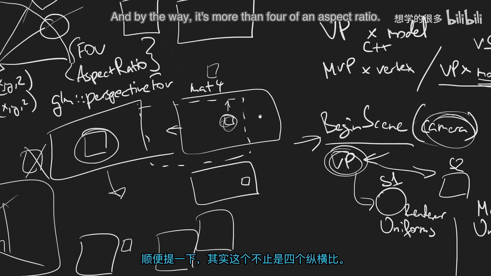
📷 Near 与 Far 裁剪面围出相机可见范围
回到原视频 (00:35:01)
5. 相机需要的数据
(参考时间: 00:09:02)
拆解摄像机后，可以把它需要的核心数据分成两组。
5.1 相机变换
- 世界空间位置；
- 朝向/旋转；
- 通常不含缩放；
- 用于构造 View 矩阵。
5.2 镜头属性
- Field of View；
- Aspect Ratio；
- Near Plane；
- Far Plane；
- 用于构造 Projection 矩阵。
讲师把这种分析称为“回到数据”：不理解一个概念时，先问它最终要通过哪些数字进入渲染管线。
classDiagram
class CameraData {
+vec3 Position
+quat Rotation
+float FieldOfView
+float AspectRatio
+float Near
+float Far
}
CameraData --> ViewMatrix
CameraData --> ProjectionMatrix
📷 相机由变换与镜头属性两部分数据组成
回到原视频 (00:09:02)
6. 移动摄像机等于反向移动场景
(参考时间: 00:10:06)
假设一个立方体固定在原点，摄像机向上移动。画面中立方体看起来会向下移动，并逐渐露出顶面。
摄像机向后移动，物体本身没有缩小，但透视投影让更远的物体看起来更小。
摄像机向左移动时，场景物体在屏幕上向右移动。
因此可以总结为：
物体相对相机的运动 = 相机运动的逆
摄像机不是真的绕世界飞行；它改变的是所有场景对象进入相机坐标系时的变换。
graph LR
A[Camera moves up] --> B[Objects appear lower]
C[Camera moves left] --> D[Objects appear right]
E[Camera moves backward] --> F[Objects appear farther/smaller]
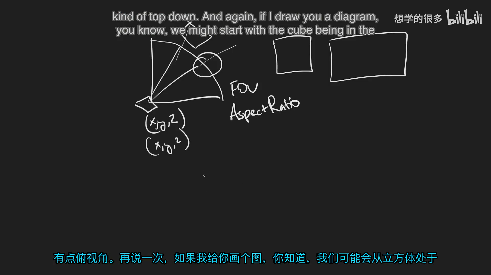
📷 摄像机位置和朝向改变时，整个场景的屏幕位置随之改变
回到原视频 (00:10:35)
7. View Matrix 是相机变换的逆
(参考时间: 00:15:30)
相机自身的世界变换由 Translation 与 Rotation 构成：
cameraTransform = Translate(position) * Rotate(rotation)
要让世界进入相机空间，需要对这个变换取逆：
viewMatrix = inverse(cameraTransform)
如果相机在世界空间向前移动，View 矩阵会让场景向后移动，从而保持“相机向前观察”的视觉效果。
相机通常不含 Scale，但通用变换系统仍可写成 TRS：
modelMatrix = Translate * Rotate * Scale
矩阵乘法顺序不可交换，改变顺序会得到不同结果。
flowchart LR
A[Camera Translation] --> B[Camera Transform]
C[Camera Rotation] --> B
B --> D[Inverse]
D --> E[View Matrix]
E --> F[World to Camera Space]
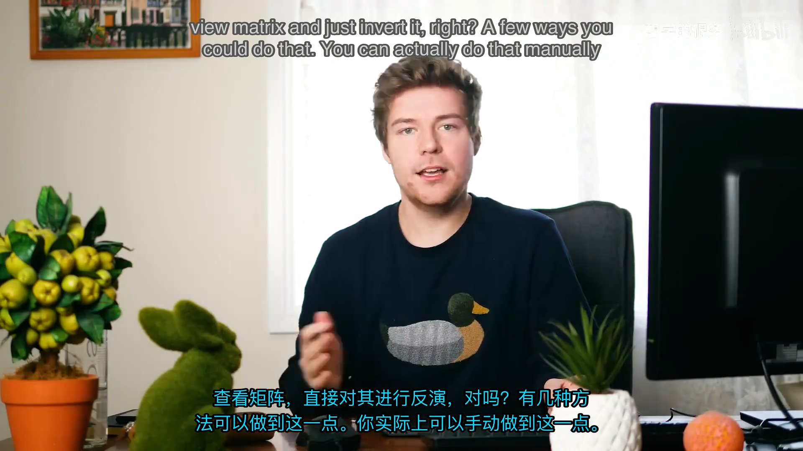
📷 View 矩阵是相机世界变换的逆矩阵
回到原视频 (00:17:00)
8. Perspective Projection
(参考时间: 00:18:06)
Perspective 投影模拟人眼和真实镜头：
- 远处物体看起来更小；
- 平行线向消失点汇聚；
- 深度感来自透视缩放。
GLM 可用类似下面的函数生成矩阵：
glm::perspective(
glm::radians(fieldOfView),
aspectRatio,
nearPlane,
farPlane);
它返回一个 4×4 投影矩阵。参数变化会直接影响画面范围、透视强度和深度分辨率。
flowchart TD
A[Perspective Projection] --> B[Field of View]
A --> C[Aspect Ratio]
A --> D[Near Plane]
A --> E[Far Plane]
B --> F[4x4 Projection Matrix]
C --> F
D --> F
E --> F
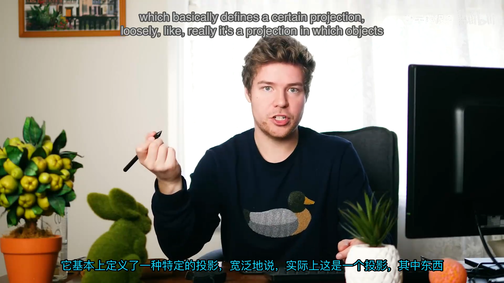
📷 透视投影中远处物体会变小并产生消失点
回到原视频 (00:18:20)
9. Orthographic Projection
(参考时间: 00:19:01)
Orthographic 投影不会因深度产生物体缩放：
- 近处和远处的同尺寸物体在画面上相同大；
- 常用于 2D 游戏、UI、工程制图和编辑器视图；
- 视锥体是长方体，而不是透视金字塔。
当前 Hazel 仍在绘制 2D 三角形和方块，因此下一讲先实现正交相机，之后进入 3D 时再增加 Perspective Camera。
graph TD
A[Projection Type] --> B[Perspective]
A --> C[Orthographic]
B --> D[Depth affects scale]
B --> E[Vanishing point]
C --> F[Depth does not affect scale]
C --> G[Parallel projection]
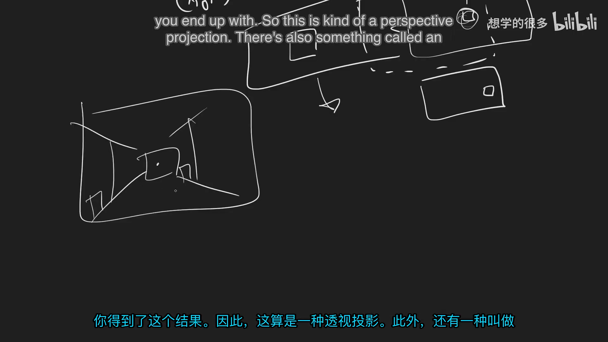
📷 正交投影保持远近物体尺寸，透视投影则随距离缩小
回到原视频 (00:19:01)
10. Projection、View、Model 与顶点
(参考时间: 00:20:08)
完整渲染位置来自四层数据：
- Projection：相机镜头和裁剪面；
- View：相机在世界中的位置与朝向；
- Model：对象自身的位置、旋转和缩放；
- Vertex：模型局部空间中的顶点。
OpenGL/GLSL 的列向量形式通常写成：
clipPosition = Projection * View * Model * vec4(position, 1.0)
其中：
ViewProjection = Projection * View
可以每帧只计算一次，供同一场景中的所有对象共享。
graph LR
A[Vertex Local Position] --> B[Model Matrix]
B --> C[World Space]
C --> D[View Matrix]
D --> E[View Space]
E --> F[Projection Matrix]
F --> G[Clip Space]
G --> H[NDC / Screen]
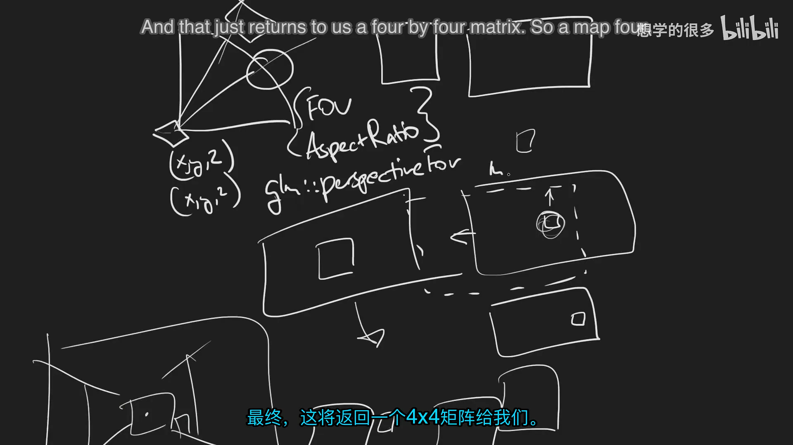
📷 Projection、View、Model 与顶点共同决定最终屏幕位置
回到原视频 (00:20:08)
11. OpenGL 与 DirectX 的乘法顺序
(参考时间: 00:21:34)
GLM 与 GLSL 通常使用列主序，矩阵在左侧相乘：
P * V * M * position
DirectX 传统上使用行主序的书写方式，概念上会把向量放在左侧，形成相反的外观顺序：
position * M * V * P
两种形式表达的是同一件事，但不能把顺序和转置方式混用。矩阵乘法不满足交换律。
flowchart LR
A[OpenGL / GLM] --> B[P * V * M * v]
C[DirectX row-major] --> D[v * M * V * P]
B --> E[Equivalent transform]
D --> E
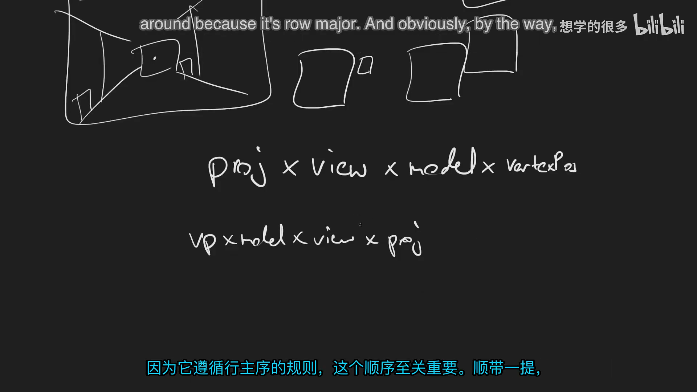
📷 列主序与行主序的书写顺序不同，但变换含义一致
回到原视频 (00:22:00)
12. ViewProjection 每帧计算一次
(参考时间: 00:23:48)
同一帧、同一场景中，相机只有一个：
glm::mat4 viewProjection =
camera.GetProjection() * camera.GetView();
场景中的所有对象共享这个 VP 矩阵。每个对象只额外需要自己的 Model 矩阵。
相机在整个 Draw 提交期间不应改变。就像摄影师按下快门前，相机位置已经确定；一帧画面代表这一瞬间的视角。
flowchart TD
A[Camera changes once per frame] --> B[Compute VP]
B --> C[Submit Object 1: VP * M1]
B --> D[Submit Object 2: VP * M2]
B --> E[Submit Object 3: VP * M3]
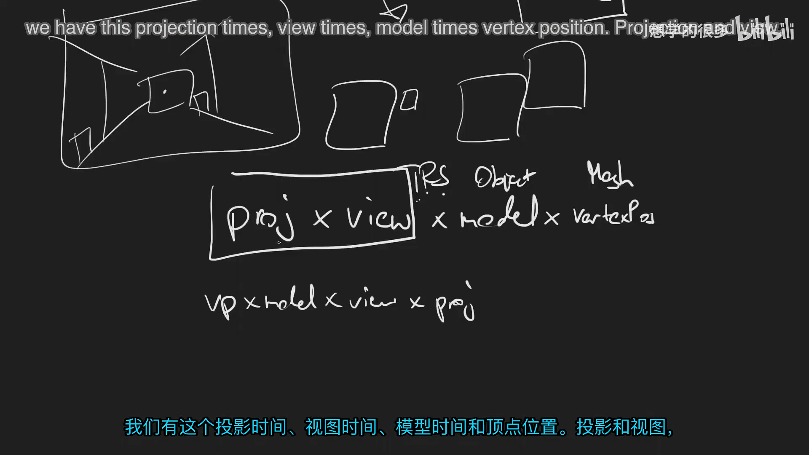
📷 同一场景的所有对象共享 ViewProjection 矩阵
回到原视频 (00:24:00)
13. 矩阵乘法放在 CPU 还是 Shader
(参考时间: 00:27:00)
有两种常见方式。
13.1 CPU 计算 MVP
每个对象先计算：
glm::mat4 mvp = viewProjection * model;
再把 MVP 作为 uniform 上传。Vertex Shader 只做：
gl_Position = u_MVP * vec4(a_Position, 1.0);
矩阵组合按对象执行一次，而不是按顶点执行。
13.2 Shader 中计算
上传 VP 与 Model，Vertex Shader 做：
gl_Position =
u_ViewProjection * u_Model * vec4(a_Position, 1.0);
Model 矩阵通常还有其他用途，例如把法线旋转到世界空间。保留独立 Model 方便后续材质与光照。
flowchart TD
A[CPU combine VP*M] --> B[Upload MVP]
B --> C[Shader: MVP * vertex]
D[Upload VP and M] --> E[Shader: VP * M * vertex]
E --> F[Model available for normals]
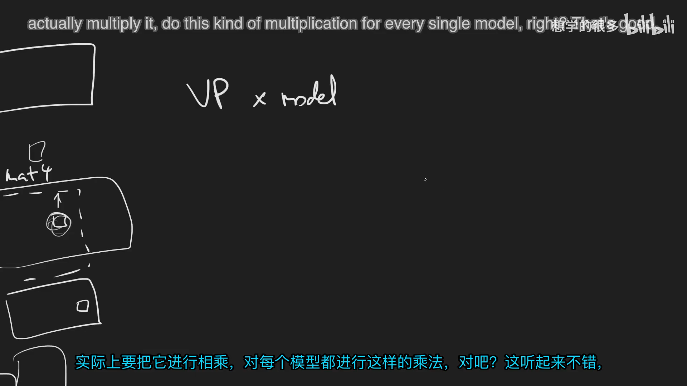
📷 矩阵可在 CPU 按对象合并，也可在 Shader 中按顶点组合
回到原视频 (00:27:00)
14. Renderer Uniform 与 Material Uniform
(参考时间: 00:30:44)
Shader uniforms 可以分成两类。
14.1 Renderer / Scene Uniforms
- ViewProjection；
- 相机位置；
- 灯光；
- 环境贴图；
- 全局时间等。
这些值在同一场景的多个物体之间通常不变。
14.2 Material / Object Uniforms
- Model 矩阵；
- 颜色；
- 金属度、粗糙度；
- 纹理；
- 发光强度等。
这些值由对象或材质决定，可能每个物体都不同。
graph TD
A[Shader Uniforms] --> B[Renderer / Scene]
A --> C[Material / Object]
B --> D[ViewProjection]
B --> E[Camera Position]
B --> F[Lights / Environment]
C --> G[Model]
C --> H[Color / Textures]
C --> I[Metalness / Roughness]
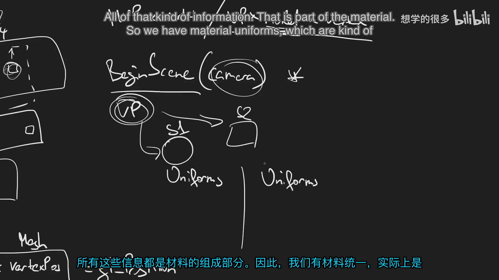
📷 场景级 uniform 由 Renderer 提供，对象级 uniform 由 Material 提供
回到原视频 (00:34:15)
15. BeginScene 不能立即假定 Shader
(参考时间: 00:30:54)
场景中不同对象可能使用不同 Shader。BeginScene 时还不能把所有相机 uniform 上传到某一个 Shader，因为此时还不知道最终会绑定哪些 Shader。
因此 BeginScene 的职责是保存当前相机/场景数据：
- 保存 ViewProjection；
- 保存相机位置；
- 保存灯光与环境；
- 在之后绑定某个 Shader 时再上传这些场景 uniforms。
如果 Renderer 未来按材质合批，那么在第一次绑定某个 Shader 时上传一次场景 uniforms，再绘制所有共享该 Shader 的对象。
sequenceDiagram
participant App
participant R as Renderer
participant S as Shader
App->>R: BeginScene(camera)
R->>R: Store scene data
App->>R: Submit object A
R->>S: Bind shader A
R->>S: Upload scene uniforms once
R->>R: Draw all A objects
R->>S: Bind shader B
R->>S: Upload scene uniforms for B
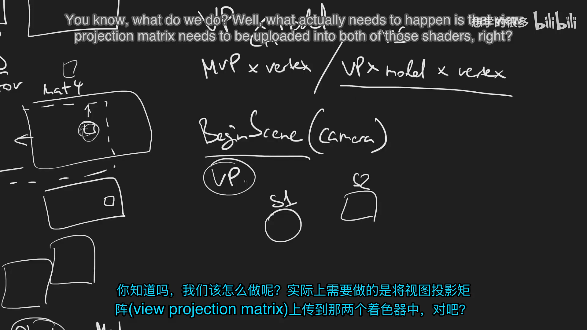
📷 BeginScene 保存场景数据，绑定具体 Shader 时再上传 uniforms
回到原视频 (00:31:10)
16. 保存相机引用还是复制矩阵
(参考时间: 00:32:36)
BeginScene 可以把相机引用留在 Renderer 中，也可以立即复制 ViewProjection 等必要数据。
在多线程或延迟渲染命令队列中，复制更安全：
- 主线程可能在 GPU 执行前继续更新相机；
- 如果命令持有相机引用，队列执行时读到的可能是下一帧状态；
- 延迟渲染通常比主线程晚一帧，引用会产生时间错位。
因此对于未来 Render Command Queue，应当复制命令所需的纯数据，而不是保存可变场景对象指针。
flowchart TD
A[BeginScene] --> B{Store camera reference or copy data}
B -- Reference --> C[Risk: camera changes before execution]
B -- Copy VP / data --> D[Stable snapshot for render queue]
D --> E[Safe deferred / multithreaded rendering]
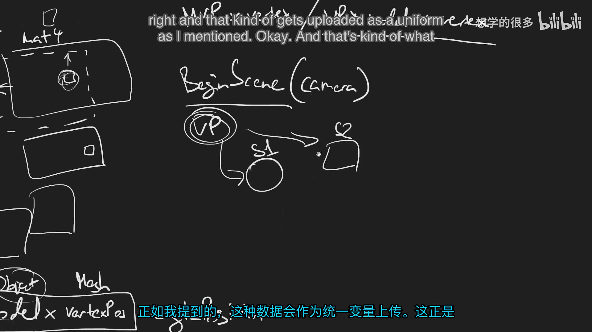
📷 延迟提交应保存相机矩阵快照，避免引用后续被修改
回到原视频 (00:32:36)
17. Submit 未来需要模型变换
(参考时间: 00:35:51)
未来 Renderer::Submit() 不只是接收 Vertex Array，还需要对象级信息：
Renderer::Submit(
vertexArray,
modelMatrix,
material);
提交一个 Mesh 时，Renderer 需要：
- 选择或绑定 Material 对应 Shader；
- 上传当前 Scene 的 ViewProjection；
- 上传对象的 Model 矩阵；
- 上传 Material uniforms；
- 绑定 Vertex Array；
- 发出 DrawIndexed。
当前没有 Material 和 Mesh 系统，所以本讲只规划接口，不提前实现。
sequenceDiagram
participant R as Renderer
participant M as Material
participant S as Shader
participant VA as VertexArray
R->>M: Get shader / material data
R->>S: Bind
R->>S: Upload ViewProjection
R->>S: Upload Model
R->>S: Upload material uniforms
R->>VA: Bind
R->>R: DrawIndexed
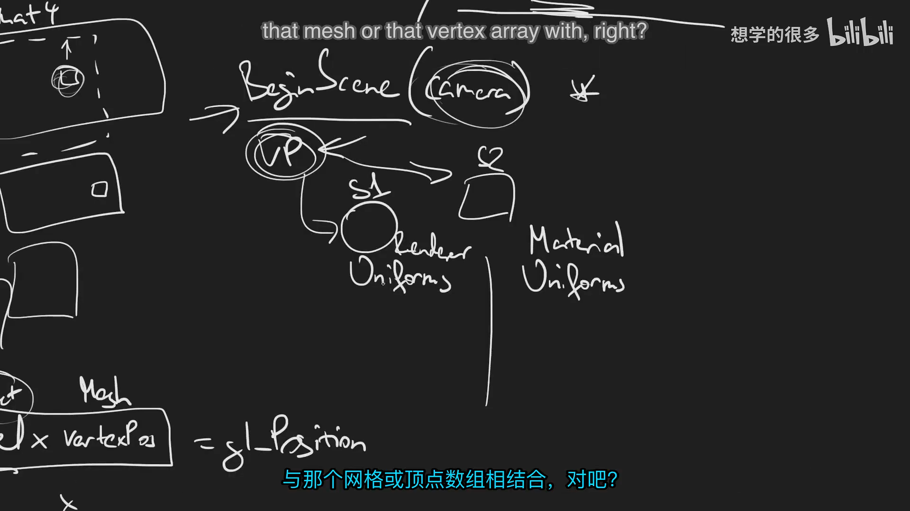
📷 Submit 将场景级相机 uniform 与对象级 Model/Material uniform 组合
回到原视频 (00:36:00)
18. EndScene 与场景状态保护
(参考时间: 00:36:11)
EndScene 当前可以保持为空，因为数据只存在于局部阶段。未来可以：
- 清理当前场景状态；
- 刷新命令队列；
- 标记场景提交结束；
- 断言没有重复 BeginScene；
- 断言 Submit 没有发生在场景外。
一个简单实现是维护“当前是否处于场景中”的状态，提前捕获 BeginScene/EndScene 使用错误。
stateDiagram-v2
[*] --> Idle
Idle --> InScene: BeginScene(camera)
InScene --> InScene: Submit(object)
InScene --> Idle: EndScene()
Idle --> Idle: Submit -> assert
InScene --> InScene: BeginScene -> assert
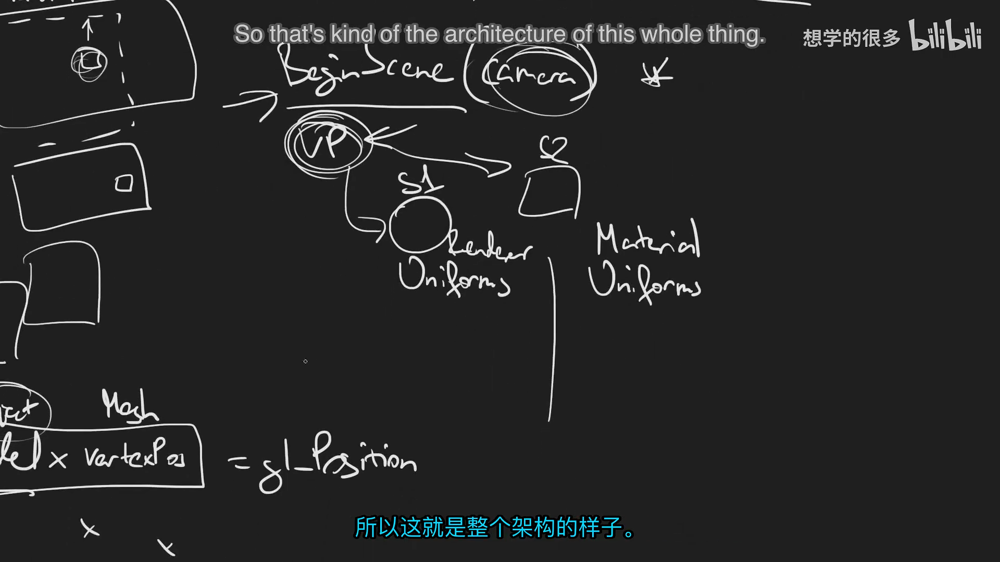
📷 EndScene 目前为空，但未来可清理状态并校验场景生命周期
回到原视频 (00:36:11)
19. 下一讲为什么先做正交相机
(参考时间: 00:37:28)
当前 Hazel 只渲染 2D 三角形和方块。使用正交投影可以：
- 保持现有物体视觉尺寸；
- 验证相机 ViewProjection 数据流；
- 验证 Shader uniform 上传；
- 先完成 Renderer BeginScene/Submit 架构；
- 为未来 Perspective Camera 保留相同接口。
下一讲将实现 OrthographicCamera，并把相机传给 Renderer：
Renderer::BeginScene(camera);
Renderer::Submit(vertexArray, model);
Renderer::EndScene();
Perspective Camera 会稍后加入 3D 场景。
flowchart LR
A[Current 2D objects] --> B[OrthographicCamera]
B --> C[Validate VP uniforms]
C --> D[Renderer scene flow]
D --> E[Future PerspectiveCamera]
E --> F[3D scenes]
📷 当前 2D 渲染适合先实现正交相机
回到原视频 (00:37:35)
20. 摄像机架构小结
(参考时间: 00:37:37)
一个完整场景相机需要：
- 世界位置；
- 朝向；
- View 矩阵；
- Projection 矩阵；
- Field of View；
- Aspect Ratio；
- Near/Far 平面；
- ViewProjection 组合。
Renderer 需要：
- BeginScene 接收并保存当前场景相机数据；
- 绑定 Shader 时上传场景 uniforms；
- Submit 对象时额外上传 Model 与 Material；
- 在多线程命令队列中复制数据快照。
graph TD
A[Camera] --> B[View Matrix]
A --> C[Projection Matrix]
B --> D[ViewProjection]
C --> D
D --> E[Renderer Scene Uniforms]
F[Object Transform] --> G[Model Matrix]
G --> H[Object Uniforms]
E --> I[Shader]
H --> I
I --> J[Vertex Shader]
J --> K[Clip Space]
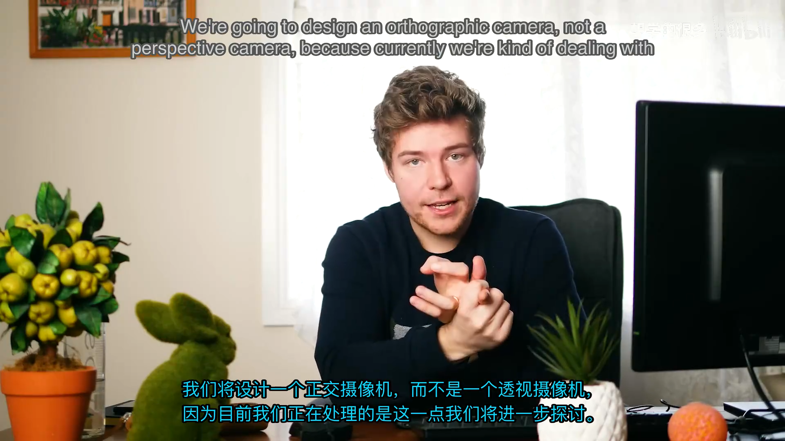
📷 摄像机最终通过 ViewProjection 与对象 Model 共同进入 Shader
回到原视频 (00:37:37)
21. 本节结论
本讲完成了相机系统的概念和数据设计：
- 摄像机是引擎抽象，不是 OpenGL 原生对象；
- 区分相机变换与镜头投影属性；
- Field of View 决定视野宽窄；
- Aspect Ratio 决定画面形状；
- Near/Far 定义裁剪范围；
- View 矩阵是相机变换的逆；
- Perspective 有远小近大，Orthographic 保持平行尺寸；
- MVP 矩阵把局部顶点变换到屏幕；
- ViewProjection 每帧每场景计算一次；
- Model 矩阵每个对象独立；
- Renderer 负责场景 uniforms，Material 负责对象 uniforms；
- BeginScene 保存相机数据，收到 Shader 后再上传；
- 延迟渲染应复制相机数据快照；
- 下一讲先实现正交相机。
本讲没有新增 Hazel 代码，但确定了下一讲所有类和函数的输入、职责与数据流。相机架构的核心不是“把摄像机放在某个位置”，而是稳定地把世界转换到当前观察者的坐标系。